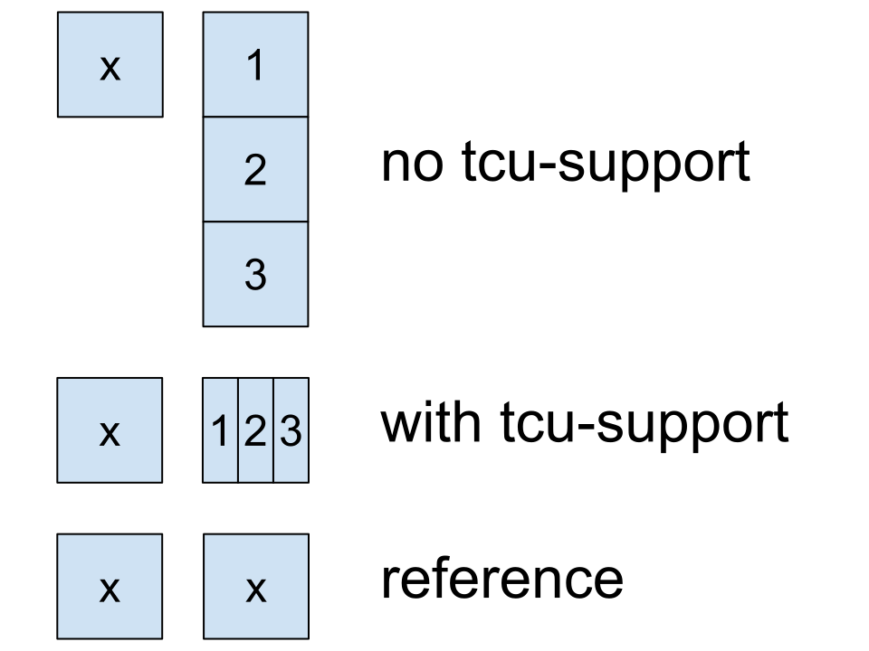
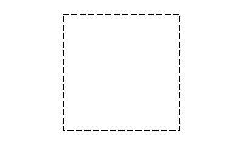
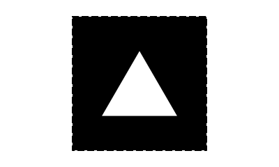
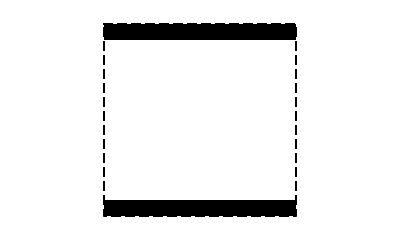
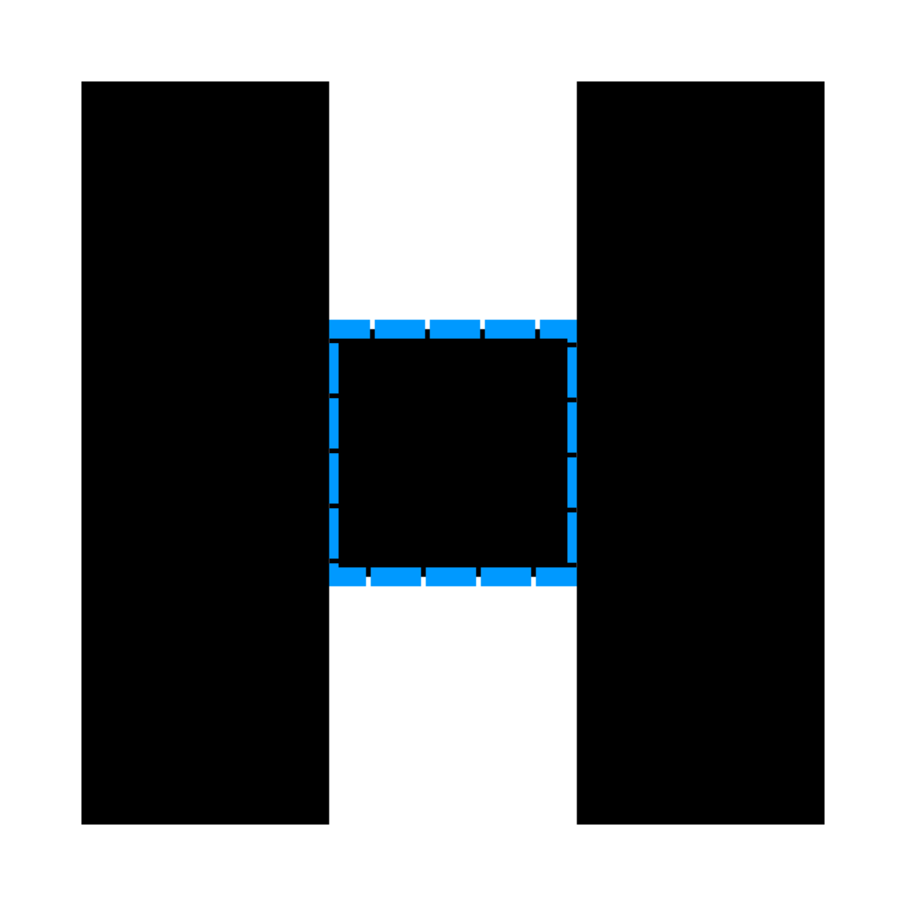
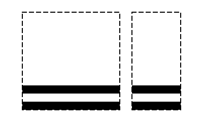
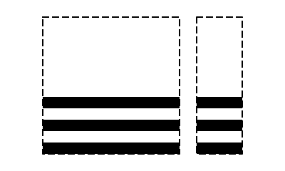
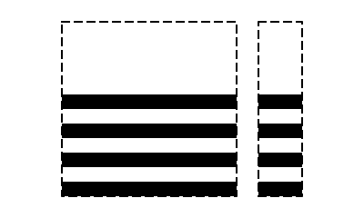

The CSS Writing Modes specification defines a property text-combine-upright which enables a tate-chu-yoko (縦中横) effect; applying the property to a span of text will combine the text inside it horizontally so that it looks a single character in vertical writing modes.
While invesitigating the specification for developing test suite, test authors found the need for a new font specifically designed to test the property. This document gives a fairly basic guide to CSS testing and testing text-combine-upright specifically, and lists the requiremnts of the font needed to test the property.
CSS testing terminology
Before getting into the requirements of fonts, let me explain some terms specific to CSS testing.
Reftests (reference tests)
A reftest are one of the testing format used in W3C and browser vendors for testing features that add visual effects to a page such as CSS and SVG. A reftest are madte of two (or more) files: a test case made using features to test, and reference file(s) made using widely-implemented-and-deployed features (e.g. CSS2). On conforming implementation the reference and the test case will visually match.
For ease of testing, references often use simple geometric shapes such as green square.
A reference of green rectangle, used for a flexbox test
The Ahem font
In order to test CSS features, it is required to install the Ahem font in a testing system. The Ahem font only contains simple geometric glyphs such as a square and rectangles. With those simple glyphs it is easy to craft references and test cases. Here's a design specification of Ahem quoting from the README file:
The font's em square is exactly square.
Its ascent and descent is exactly the size of the em square. This
means that the font's extent is exactly the same as its line-height,
meaning that it can be exactly aligned with padding, borders, margins,
and so forth.
The font's alphabetic baseline is 0.2em above its bottom, and 0.8em
below its top. The font has an x-height of 0.8em.
The font has four glyphs:
'X' U+0058 A square exactly 1em in height and width.
'p' U+0070 A rectangle exactly 0.2em high, 1em wide, and aligned so
that its top is flush with the baseline.
'É' U+00C9 A rectangle exactly 0.8em high, 1em wide, and aligned so
that its bottom is flush with the baseline.
' ' U+0020 A transparent space exactly 1em high and wide.
Most other US-ASCII characters in the font have the same glyph as X.
Testing text-combine-upright
The text-combine-upright property combines a short run of text horizontally in vertical writing modes. The resulting effect is called tate-chu-yoko (縦中横, sometimes abbreviated as TCY in CSSWG mailing lists) and used for short digits in vertical Japanese layout.
Example of tate-chu-yoko (borrowed from the Writing Modes spec). The digits "20" and "16" are aligned horizontally. Also the digit "4" is rotated upright even it looks an ASCII digit; this is because "4" is also composed thus rotated.
In order to make reftests, it needs a font which contains geometric glyphs designed so that horizontally-combined glyphs and the reference would look the same (e.g. a 1em × 1em square glyph). With such font, a test can be written as follows:
<style>
.test {
writing-mode: vertical-rl;
font-family: Ahem;
}
.tcy {
text-combine-upright: all;
}
</style>
<p>Test passes if the following is identical:</p>
<div class="test">
<p><span class="tcy">123</span></p>
<p>x</p>
</div>
In conforming user agent with the font installed on the system, the span "123" will be combined horizontally thus rendered as a single square, resulting to match the reference. In non-conforming user agents the span will neither be combined nor be compressed as a single square, it will thus not match the reference rendering.

An illustration of output from ① no-tcu-support UA, ② conforming UA, ③ reference file
The above example uses Ahem; some tests can be written using Ahem. However, many features of text-combine-upright cannot be tested with only a black square glyph. Also the spec requires UAs with OpenType support to use OpenType features on rendering particular properties; to test this, the font must be an OpenType font with required fetures.
Glyphs
This section describes requirements for glyphs that the font needs and gives some ideas of glyphs.
Glyphs that can be used as an alternative to Ahem glyphs
In the prior section we demonstrate how we can test text-combine-upright using Ahem. In some cases tests can be written only using Ahem, but there are cases where we need additional glyphs.
A black square is a 1em × 1em square glyph; it is pretty much the same as Ahem's glyph for x
A blank of 1em × 1em

It might be okay with just using Ahem if tests needing black square only contain codepoints in ASCII-range.
Glyphs to check whether a character is rotated or not
text-combine-upright combines a span of text horizontally and make the resulting compression rendered upright, even when the element has just one character.
If the element contains two or more characters, Ahem can be used to check if user agents support composition effect. However, if it is just a single character, Ahem cannot be used since most character in Ahem is a 1em square and thus cannot figure out whether the resulting coposition is rendered upright or not.
Therefore, we need two glyphs where:
their widths and heights are 1em
one matches another visually when another rotated 90° counterclockwise

example glyphs that satisfy the requirements above: "pointing-right" on left and "pointing-up" on right
When combining text as for text-combine-upright: all, the glyphs of the combined text are composed horizontally (ignoring letter-spacing and any forced line breaks, but using the specified font settings), similar to the contents of an inline-box with a horizontal writing mode and a line-height of 1em.
Later in the section it says:
For other text layout purposes, e.g. emphasis marks, text-decoration, spacing, etc. the resulting composition is treated as a single glyph representing the Object Replacement Character U+FFFC.
So we need to test if user agents ignore spacing, emphasis marks, decorations applied to each character inside the composition but rather apply those effects to the resulting composition, treating as if it were a single characeter.
The test should be written to check if there is no emphasis mark or ruby character inside the composition. To make this easy to observe, we need a glyph where:
it does not overlap ruby text, emphasis mark, or any decoration
The following is an idea for such glyph: it draws overline and underline but does not do so in between them.

This will make the test reftestable.
Conforming user agents apply text-emphasis as if the content inside <span class="tcy"> were a single character (left). Non-conforming user agents might apply text-emphasis to each character inside <span class="tcy"> (right)
This glyph cannot cover the assertion the resulting composition is treated as a single glyph representing the Object Replacement Character U+FFFC. Test authors are not sure if that will cause a visual effect that can be tested.
The effective size of the composition is assumed to be 1em square; anything outside the square is not measured for layout purposes.
Hence, we need a glyph where:
its size is greater than 1em square

The "Heavy H". The dashed region in the center of the glyph indicates the 1em square and the lines besides the square has the length of 3em and the thickness of 1em.
By using this glyph with two square glyphs we can make a 3em square.
OpenType implementations must use width-specific variants (OpenType features hwid/twid/qwid; other glyph-width features such as fwid or pwid are not included) to compress text in cases where those variants are available for all characters in the composition.
In order to test this, we need glyphs for hwid, twid, and qwid; they need to be distinguishable from each other and also distinguishable from fwid/pwid glyphs. For the use in reference, we also need "extended" versions of hwid/twid/qwid glyphs; the widths of the extended version are all 1em.
A double stripe
Used for the hwid feature.

double stripe. reference glyph on left, hwid glyph on right.
A triple stripe
Used for the twid feature.

triple stripe. reference glyph on left, twid glyph on right.
A quadruple stripe
Used for the qwid feature.

quadruple stripe. reference glyph on left, qwid glyph on right.
There might be cases where a character inside TCY does not have all features, the font need to have characters that only have (or miss) hwid/twid/qwid feature. Tests need to check combination of characters with different feature sets.
Since the processing details of compression rules are up to User Agents, when the resulting glyphs from composition differs from each other, the test can only be verified using negative references.
Glyphs to check the optional processing regarding U+6C34
In some fonts, the ideographic glyphs are given a compressed design such that they are 1em wide but shorter than 1em tall. To accommodate such fonts, the UA may vertically scale the the composition to match the advance height of 水 U+6C34.
We need two glyphs:
a glyph of horizontal rectangle (e.g. 1em × .8em), mapping to 0x6C34
a glyph of thinner horizontal rectangle (e.g. 1em × .3em), mapping to a certain codepoint
Unless otherwise specified, glyphs are mapped to both in horizontal and in vetical (using the vert feature) modes.
Code Point
Glyph
Note
x (U+0078)
Black
SPACE (U+0020)
Blank
R (U+0052)
Pointing Right
U (U+0055)
Pointing Up
O (U+004F)
Overline+Underline
h (U+0048)
Heavy H
r (U+072)
Pointing Right and Pointing Up
default: Pointing Right
vert: Pointing Up
Fonts to test width-variant features
These fonts test the width-related features. One font contains only hwid feature, and another contains all the five features (hwid, twid, qwid, fwid, and pwid).
Below is a table for the latter font; the former (only contains hwid feature) lacks other four features.
Code Point
Glyph
Note
a (U+0078)
Double Stripe Triple Stripe Quadruple Stripe Black
hwid: Double Stripe
twid: Triple Stripe
qwid: Quadruple Stripe
fwid: Black
pwid: Black
H (U+0078)
Double Stripe
Used in reference
T (U+0078)
Triple Stripe
Used in reference
Q (U+0078)
Quadruple Stripe
Used in reference
Acknowledgements
Special thnks goes to the current and former editors of the Writing Modes specification: fantasai, Koji Ishii, and Shinyu Murakami
In addition to the editors, this work wouldn't have been possible without help from: Taichi Kawabata